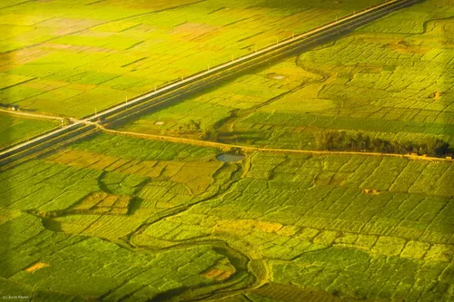
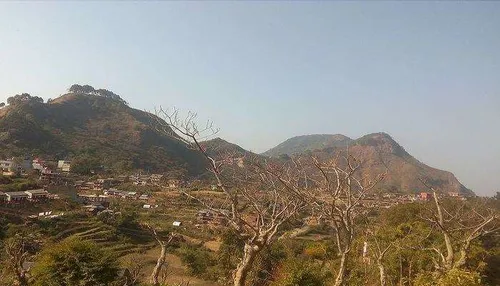

Nepal - Topography
Nepal is made up of three strikingly contrasted areas. Southern Nepal has much of the character of the great plains of India, from which it extends. Known as the Terai, this region comprises both cultivable land and dense jungle, the latter being for the most part a game preserve inhabited by the wild elephant, tiger, and other typically South Asian fauna. Besides being a hunting ground, the forests are worked for their valuable timber. The Terai contains about one-third of Nepal's population and makes up about one-fourth of the total area.

The second and by far the largest part of Nepal is formed by the Mahabharat, Churia, and Himalayan mountain ranges, extending from east to west. Their altitude increases toward the north, culminating on the Tibetan border in Mt. Everest (Sagarmatha in Nepali), standing amid other noble peaks. Three principal rivers originate from glaciers and snow-fed lakes, break southward through deep Himalayan gorges, and enter, respectively, the Karnali, Gandak, and Kosi basins. Flowing toward India, they become tributaries.

The third area is a high central region, some 890 km (344 sq mi) in extent between the main Himalayan and Mahabharat ranges; this region is known as the Ka¯thmāndu Valley, or the Valley of Nepal. Overlooked by mountains, the valley, with its fertile soil and temperate climate, supports a thriving agriculture. Here Ka¯thmāndu, the capital, is situated, with the foothill towns of Bhaktapur and Patan nearby. This is the only region of Nepal that has any considerable population density.
